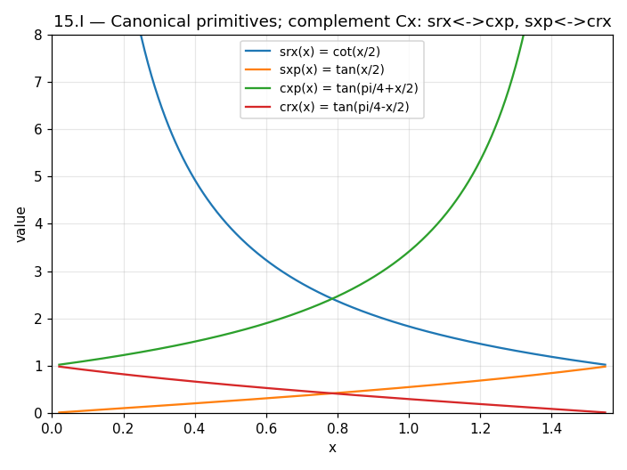
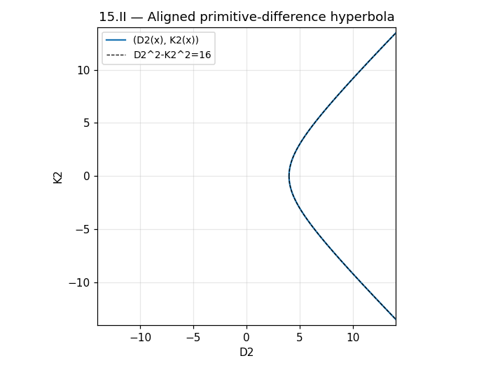
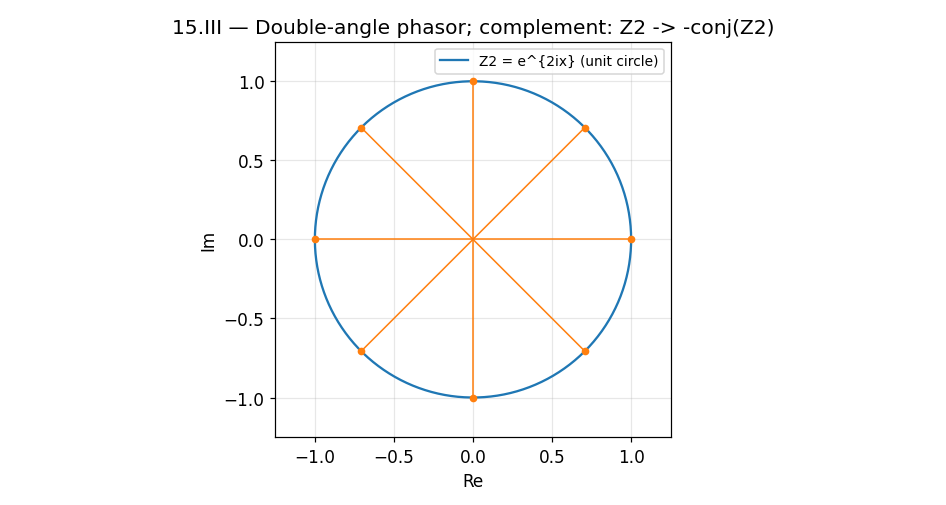
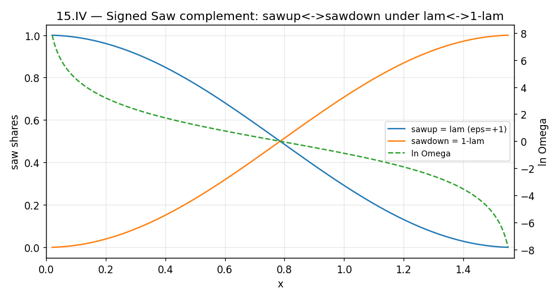
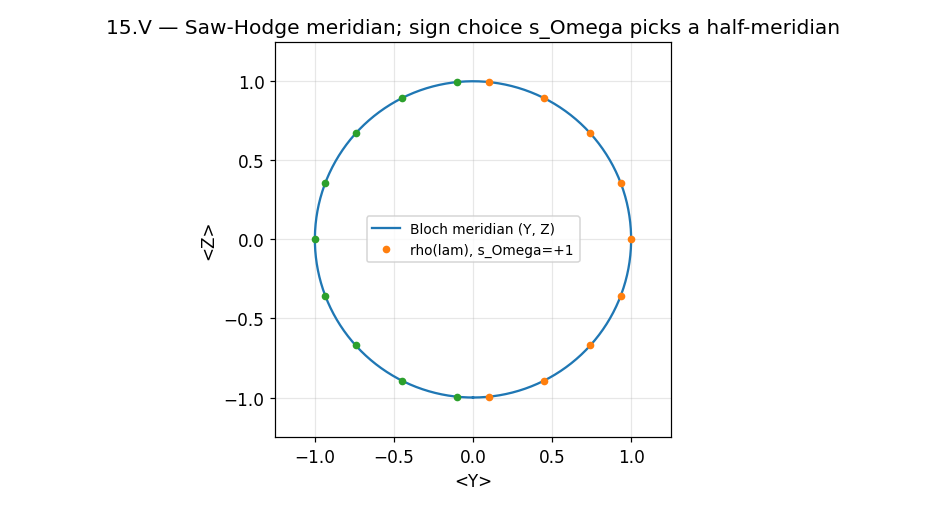
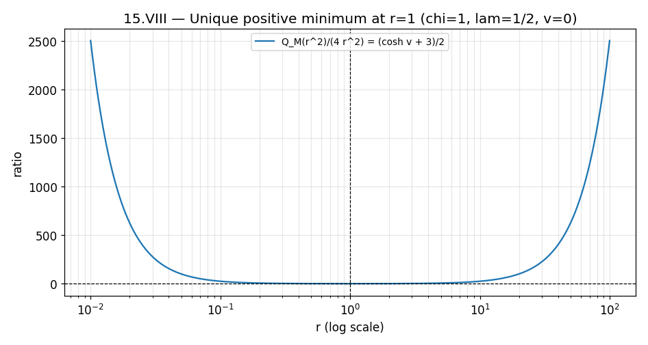

A restructured rewrite of Book 15 of R Theory — Volume III. Pictures and intuition first; the formal audit second. Every claim carries exactly one status: CP checked proof, SC completed symbolic check, NC completed numerical check, ST standard imported theorem, MA manuscript assertion, AX assumption or axiom, IN incomplete or failed computation, IC incorrect result. A sampled numerical agreement (~1e-9) is a completed numerical check, never a proof.
Contents. I. See it first · II. Then earn it · III. What is established, what is conditional, what is not · IV. Close the book
Source: volume_iii.txt lines 795–1320 (Book 15, 526 lines / 4005 words). Governing rule of the book: firewalled status — every bridge (Saw complement, quarter-phase lift, product-duality matching, E8 threshold) is labeled at the point where it is introduced as exact mathematics, conditional physics, or admitted input, and later books may inherit only what the label allows.
Six pictures. Each one is an exact identity or theorem of Book 15 drawn before it is proved. The graphs below are live Desmos calculators (drag to pan, scroll to zoom); if Desmos cannot load, a static rendering appears instead, generated from the same formulas.






Section by section. Each claim carries one status tag. Two independent check suites were run. The upstream audit vol3/book15/audit_book15.py (240 assertions, all passed; tolerances 1e-6–1e-12, with symbolic spot checks for the 15.IV core reduction and the 15.V projector/generator identities; full ledger vol3/book15/LEDGER.md) stands as provenance. The rewrite adds validation/book15/verify_book15.py — 220 assertions, all passing, no timeouts — covering every checkable page claim with exact (sympy / exact integer) checks where the mathematics permits them, and validation/book15/test_embeds.py — 13 assertions on graph↔fallback↔caption consistency. Worst measured numerical error across the new suite: 2.5e-8, confined to (1−cos x)/sin x-type reciprocal forms near seams (floating-point cancellation; the identities are exact algebra). Live Desmos rendering was verified by static ID/expression checks only, not by browser rendering.
Theorem 15.I.T1 (primitive complementary interchange): complementation exchanges the primitive pairs srx ↔ cxp and sxp ↔ crx, hence urx(Cx) = uxp(x), uxp(Cx) = urx(x). Direct trig substitution, verified on a 1600-point grid. CP Definition 15.I.D1: the complex package ΨU = urx + i·uxp with ΨU(Cx) = i·conj(ΨU(x)). Corollary 15.I.C1: complementation is an involution (C² = id), not a propagation equation. CP The M15-A contract/firewall: the swap is usable downstream; it generates no time, transport, Hamiltonian, chirality, Hodge structure, or product duality. MA
Definition 15.II.D1: A = srx−sxp = 2cot x, B = cxp−crx = 2tan x; Theorem 15.II.T1: AB = 4 (one line). CP Definition 15.II.D2: D2 = A+B = urx+uxp, K2 = A−B; Theorem 15.II.T2 (UNA hyperbola): D2² − K2² = 4AB = 16; complement swaps A↔B, fixes D2, negates K2. CP The M15-B1 firewall: algebraic state geometry, not energy/momentum/boost. MA
Theorem 15.III.T1: D2 = 4/sin 2x, K2 = 4cot 2x. CP Theorem 15.III.T2: Z2 = (K2+4i)/D2 = e2ix. CP Definition 15.III.D1: real/imaginary parts HR = 1/D2 = sin 2x/4, VR = K2/2D2 = cos 2x/2 with HR′ = VR, VR′ = −4HR, Z2′ = 2iZ2. Corollary 15.III.C1: complement parity — HR even, VR odd, Z2(Cx) = −conj(Z2). CP The M15-B2 firewall: Z2 is a mathematical phase coordinate, not yet quantum/gauge/clock/Hodge/E8. MA
Theorem 15.IV.T1 (signed Saw complement): on the positive bounded chart the Saw reduces exactly to sawup = ελ, sawdown = ε(1−λ); under λ ↔ 1−λ, the shares exchange, Ω ↔ Ω⁻¹, ln Ω is odd, and the chart sign ε is even. SC (core reduction proved symbolically in sympy; complement parities verified numerically). Corollary 15.IV.C1 (square-root transfer angle): with θ = π−2θλ, λ = sin²(θ/2), q = −cos θ, 2√HSaw = sin θ, Ω = tan²(θ/2). CP Definition 15.IV.D1 (qSaw normalized square): qSaw(q) = 2q/(1+q²), qSaw² + cq² = 1, Ω2 = Ω², η2 = 2η, q2 = 2q/(1+q²) = tanh η. CP The M15-C firewall: ε is factored out before squaring; Saw complement is not Hodge or product duality. MA
Theorem 15.V.T1 (Saw–Hodge meridian): the quarter-phase lift ψ = (√λ, eiφ√(1−λ)) projects to ρ = ½[I + (2λ−1)Z + 2sΩ√HSaw·Y], a Bloch meridian with the sign choice sΩ visible in ⟨Y⟩. CP (proof computation checked symbolically). Corollary 15.V.C1: balance states ρ = ½(I±Y) at λ=½; R_Y reflection maps ρ(λ) → ρ(1−λ) preserving the sign choice. CP Theorem 15.V.T2 (sign visibility): the Hermitian projector ξξ† = ρ is blind to ε, while the componentwise symmetric square QC(ξ) = (ελ, −ε(1−λ)) is blind to sΩ — jointly they recover (ε, sΩ), neither alone. CP Corollary 15.V.C2: the minus sign is the mandatory π/2-phase residue. CP Theorem 15.V.T3 (protected-traversal obstruction): meridian motion is generated by dρ/dθ = −i[(sΩ/2)X, ρ] (proved symbolically); an R_Y-even Hamiltonian confined to the I/Y operator algebra produces only X-type commutators, hence cannot traverse the meridian. CP The M15-D firewall: "Hodge" remains a conditional bridge interpretation until the gateway supplies operator matching. MA
Definition 15.VI.D1–D2: the native transfer doublet (p, q) with p²+q² = 2, p′ = −q, q′ = p, and the native quarter-turn generator J² = −I with t′ = Jt. Theorem 15.VI.T1: the order-two Saw complement on λ and the order-four quarter-turn (CJ²: t → −t) are distinct transformations — conflating them is an error. CP Definition 15.VI.D3 / Theorem 15.VI.T2: the symmetric-square readout Qt = (ε/2)[sin 2x·Z + cos 2x·X] satisfies Qt′ = [J, Qt], Qt″ + 4Qt = 0, Qt² = ¼I. CP Corollary 15.VI.C1: JQtJᵀ = −Qt. CP Corollary 15.VI.C2: the (sin 2x, cos 2x) pair from Qt coincides with the 15.III phasor route — one harmonic structure, two routes. CP Bridge 15.VI.B1: a later physical normal-plane quotient may realize product duality with the same J²=−I algebra — explicitly conditional; E8 realization is downstream. MA The M15-E firewall: do not identify Saw complement with product duality; the native J is not automatically Hodge or E8. MA
Theorem 15.VII.T1 (dual-mode bigrading): two commuting involutions σext, σint split End(V) into four parity eigenspaces with multiplicative parity rules. CP Corollary 15.VII.C1: product-parity coarsening K = IextJint, K² = I. CP Corollary 15.VII.C2: relative complex-structure orientation on K sectors. CP Witness 15.VII.1: the minimal real 4×4 witness has four 4-dimensional parity spaces. CP (exact finite-dimensional computation, verified exactly) Witness 15.VII.2: the orthogonal bridge-polarization witness B = −σy, {K,B} = {H,B} = 0, H(θ) = cosθ·H − sinθ·B, ⟨B,H(θ)⟩ = −sinθ. CP (exact symbolic 2×2 computation) Corollary 15.VII.C3: a generic bridge polarization only shifts phase, ⟨Bδ,H(θ)⟩ = cos(δ+θ). CP (exact) Conditional Theorem 15.VII.CT1: if B-purity is enforced (κx=0), the stationary branch is θ* = ±π/2 by sign of sΩκy — quarter-phase selection is conditional on the purity contract, not derived. CP Result 15.VII.3: hyperbolic double-angle compatibility v = 2u exact. CP The M15-F firewall: the bigrading is an operator bridge awaiting representation realization — no unconditional E8 theorem. MA
Definition 15.VIII.D1: the amplitude dictionary χ=r², λ=1/(1+r²), v=ln[λ/(1−λ)]=−2ln r, reciprocal exchange r↔r⁻¹. Theorem 15.VIII.T1: the even-exterior polynomial QM(χ) = 1+6χ+χ² from dim Λ0,2,4M = 1, 6, 1. CP Corollary 15.VIII.C1: reciprocal covariance χ²Q(χ⁻¹) = Q(χ), Q/χ = 2cosh v + 6. CP Definition 15.VIII.D2: the mirror-weighted family Pδ = 1+4δr+6r²+4δr³+r⁴ with P₀=QM(r²), P±1=(1±r)⁴. Theorem 15.VIII.T2: the parent identity Pδ = Aδ² + (1−δ²)(1+r²)², and at δ=0 the ratio QM(r²)/4r² = (cosh v+3)/2 has its unique positive minimum at r=1 (χ=1, λ=½, v=0). CP The M15-G firewall: the 4-manifold is not yet the tangent space; no cosmology implied. MA
Threshold Statement 15.IX.T1: the Books 14–15 structures may be carried into the E8(−24) gateway analysis without status change; admitting the host adds no dynamics and does not make E8(−24) a consequence of Volumes I–II. MA (dependency/scope declaration, correctly labeled as admission) Threshold Closure 15.IX.T2: the pre-E8 chain and its status accounting — a meta-summary, asserted not proved. MA Theorem 15.IX.T3 (canonical round-trip normalization): exact canonical recovery forces the common scalar factor c=1. CP (two-line proof) The M15-H contract constrains Book-16 ordering; no backward strengthening. MA The 30,380-dimensional E8 representation numerics cited here — Weyl dimension 30380, 4 dominant weights, exact multiplicity sum 30380 — come from a completed exact integer (Freudenthal) computation. SC Update 2026-09-19: explicit E8 generators are now constructed and numerically verified. The 248 adjoint matrices from the so(16)⊕S⁺ spinor construction satisfy the full Jacobi identity — the 3-spinor Fierz check is exactly 0.0 over 341,376 triples — and yield 240 roots with the E8 Cartan matrix. NC The 30380 representation's 248 generators are built as sparse matrices (44.4M nonzeros): Casimir eigenvalue exactly 120 (measured deviation 4.0e-10), Serre relations 1.7e-14, and the Cartan diagonals reproduce the SC weight table exactly. NC Both constructions are complexified (no real-form reality condition imposed). The existence/use of E8(−24) as the next representation host is admitted input, not derived in Book 15. MA The generator tables are downloadable from the pre-computed tables page.
Δop(Book 15) = ∅: the bridges of Book 15 predict no new independently measured observable — correctly scoped as a status declaration; the local negative theorems (15.V.T3, 15.VI.T1, 15.VII firewall) are retained in the stack. MA
No incorrect (IC) and no incomplete (IN) claims were found in Book 15. The upstream audit's 240 assertions all passed, and the rewrite's two new suites pass completely (220 verification assertions + 13 embed-consistency assertions, no timeouts, worst measured error 2.5e-8 on cancellation-prone reciprocal forms near seams). The two subtle spots (exact Saw reduction on the positive chart; λ=(1−p)/2 staying in [0,1] via |p|≤1 on every open quadrant) both check out. One incorrect caption was found and fixed during this cleanup (Figure 1 mislabeled the four primitives against the source; the labels are now the source's own). Live Desmos rendering is statically checked, not browser-verified.
Book 15 builds the pre-E8 bridge inventory: an exact complementary-swap algebra, a double-angle phasor, a signed Saw calculus with its quarter-phase lift, a native order-four quarter-turn kept rigorously distinct from the order-two Saw complement, an abstract operator bigrading, and a 4-dimensional even-exterior polynomial with a unique minimum. Every physical identification — Hodge structure, product duality, bridge purity, the E8 host — is labeled at introduction as downstream, conditional, or admitted. The book adds no operational prediction of its own (Δop(Book 15) = ∅), and the representation gateway of Book 16 may inherit only the certified mathematical identities and the explicitly labeled conditional physics established here. MA (status declaration)
Rewrite status: all pictured identities were re-verified against the source — primitive interchange, hyperbola, double-angle phasor, Saw complement, Bloch meridian, native doublet, quarter-turn, dual-involution bigrading, bridge polarization, even-exterior minimum, round-trip normalization, and the E8 30380 citation — 220 assertions in validation/book15/verify_book15.py, all passing, no timeouts. Worst measured error 2.5e-8, confined to the (1−cos x)/sin x-type reciprocal forms near seams (pure floating-point cancellation in the grid check; the identities are exact algebra); the 15.VII witnesses and the E8 citation were verified exactly (sympy / exact integer arithmetic). Embed↔fallback↔caption consistency is checked by validation/book15/test_embeds.py. Live Desmos rendering was verified by static ID/expression checks only, not by browser rendering. Pictures illustrate proved statements; they are not the proofs.